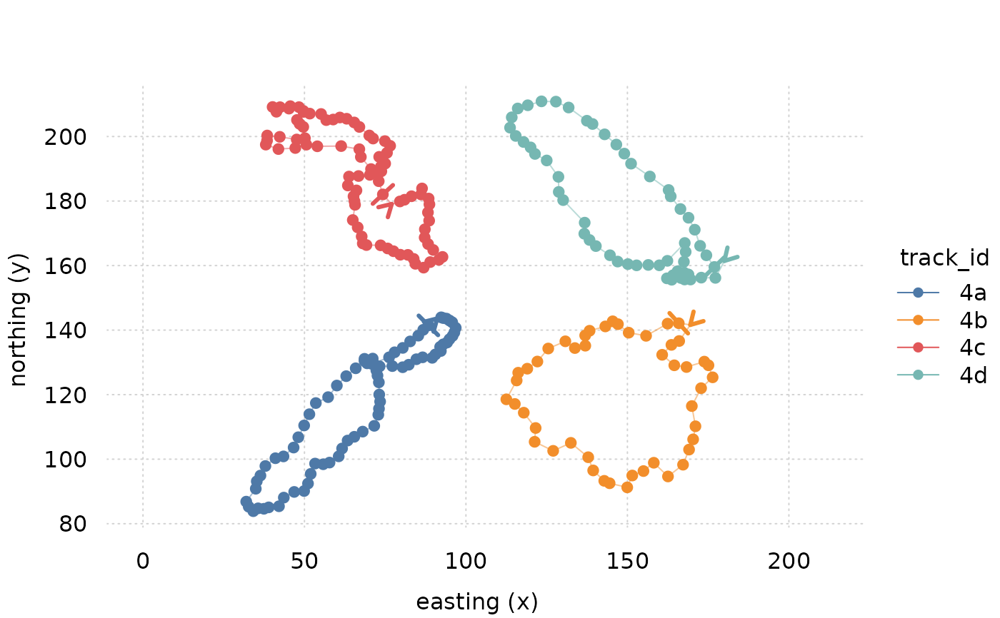
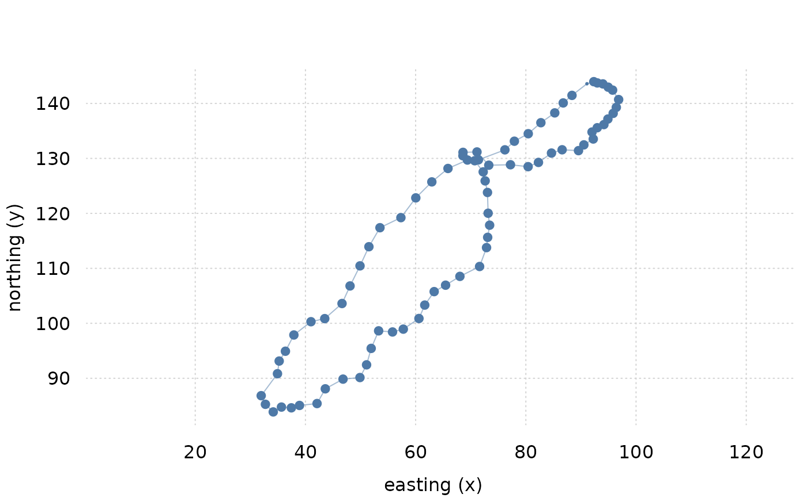
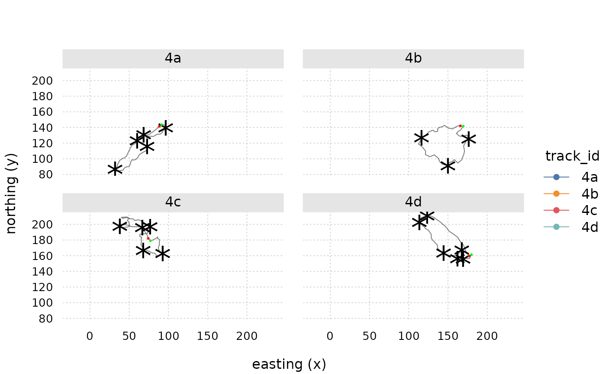
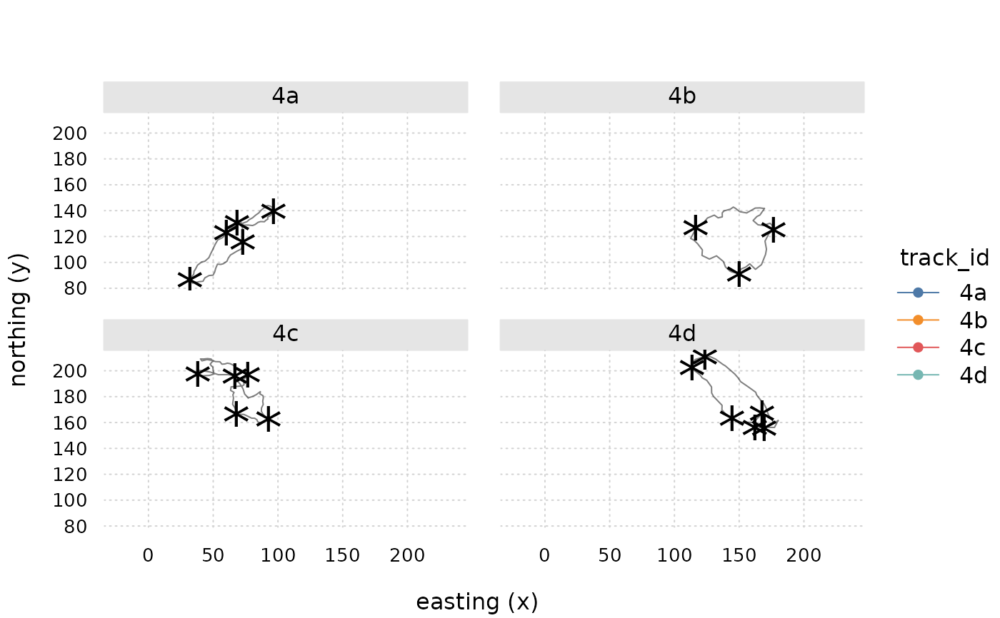
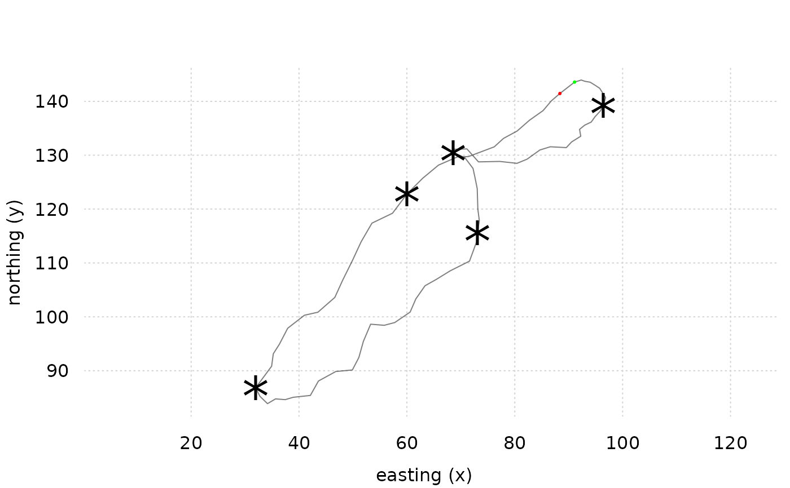
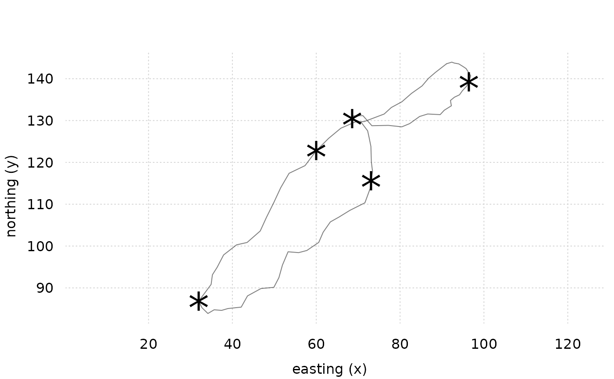

plot.change_point_test.RdPlots change points of objects of class change_point_test
based on tinyplot functionality.
# S3 method for class 'change_point_test'
plot(
x,
cp_style = list(col = "black", cex = 3, pch = "*"),
lines = TRUE,
lines_style = list(col = "black"),
points = FALSE,
points_style = list(pch = 19),
start_indicator = TRUE,
start_indicator_style = list(col = "green"),
end_indicator = TRUE,
end_indicator_style = list(col = "red"),
facet = TRUE,
facet.args = list(),
theme = NULL,
asp = 1,
...
)an object of class change_point_test
list graphical parameters to apply to change points
logical should lines be plotted?
list of graphical parameters passed to [tinyplot::tinyplot()] when plotting lines
logical should track data be plotted as points?
graphical parameters passed to [tinyplot::tinyplot()] when plotting points
logical indicator if arrows indicating start point of each track should be added
list of graphical parameters for start indicator. See section 'x_indicator_style'.
logical indicator if arrows indicating endpoint of each track should be added
list of graphical parameters for end indicator. See section 'x_indicator_style'.
logical should the plot be facetted by track?
list of arguments controlling facet behavior.
If `ncol` is unspecified, an attempt is made chose a visually pleasing value.
See tinyplot
character or list: 1) `NULL` (default): Use currently set `tinyplot` theme if one is set. Otherwise use trackframe default. 2) a string naming a built-in tinyplot theme `vignette("themes", package = "tinyplot")` or 3) a list of graphical parameters defining a custom theme
numeric y/x aspect ratio
additional graphical parameters passed to tinyplot
all args passed on to [plot::trackframe] (`cp_style“ passed as `marker_style`) This method exists to provide different defaults
library(cpt)
library(trackframe)
library(tinyplot)
data("cptfiguredata_tf")
data <- cptfiguredata_tf[startsWith(cptfiguredata_tf$track_id, '4'),]
class(data)
#> [1] "trackframe" "data.frame"
tinytheme("clean2")
plot(data)

# single track
plot(select_id(data, "4a"))

# calculate change points
cpt <- change_point_test(data, alpha = .01, n = 10000, q = 6)
class(cpt)
#> [1] "change_point_test" "trackframe" "data.frame"
plot(cpt)

# without path directions
plot(cpt, start_indicator = FALSE, end_indicator = FALSE)

# only one track
cpt4a <- select_id(cpt, "4a")
plot(cpt4a)

# without path direction
plot(cpt4a, start_indicator = FALSE, end_indicator = FALSE)
